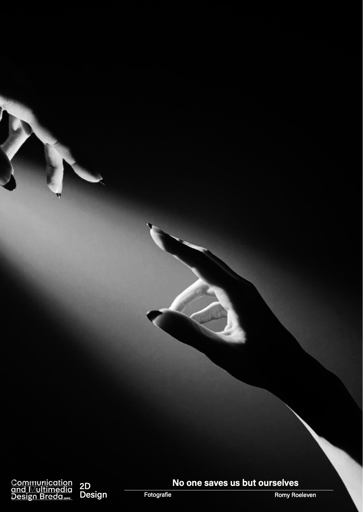

No one saves us but ourselves
Tijdens de module 2D Design moesten we een poster ontwerpen over een specifiek onderwerp. We moesten een media kiezen en ik wou heel graag grafisch, alleen omdat dit al vol zat heb ik gekozen voor fotografie. Uiteindelijk ben ik wel echt blij geweest met deze keuze.
Jouw mening en positionering zijn belangrijk. Door dit te combineren met beeld kan je het alleen maar versterken. Veel mensen waaronder jongeren en ouderen zijn eenzaam. Eenzaamheid kan leiden tot allerlei gevolgen, waaronder depressie. Uiteindelijk heb je alleen jezelf. Vandaar de quote 'No one saves us but ourselves'.
